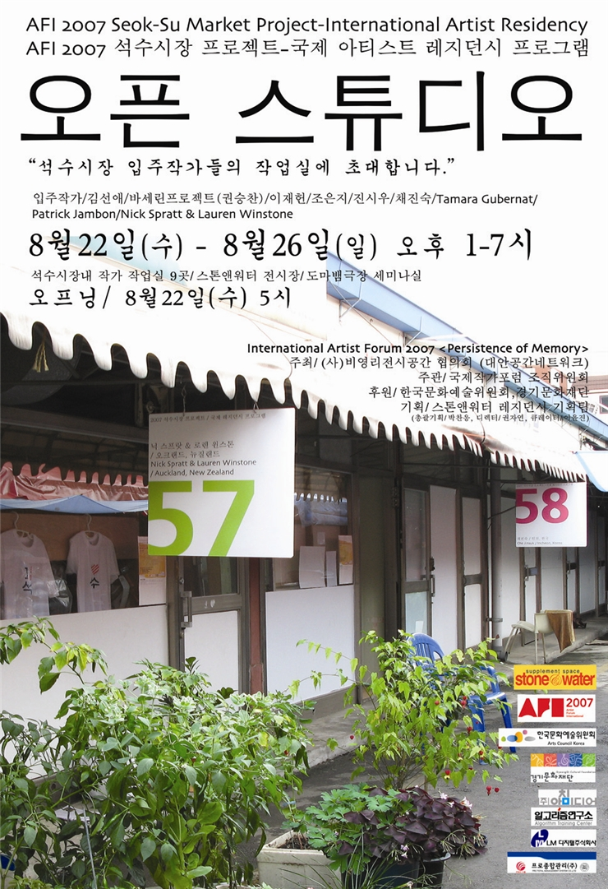
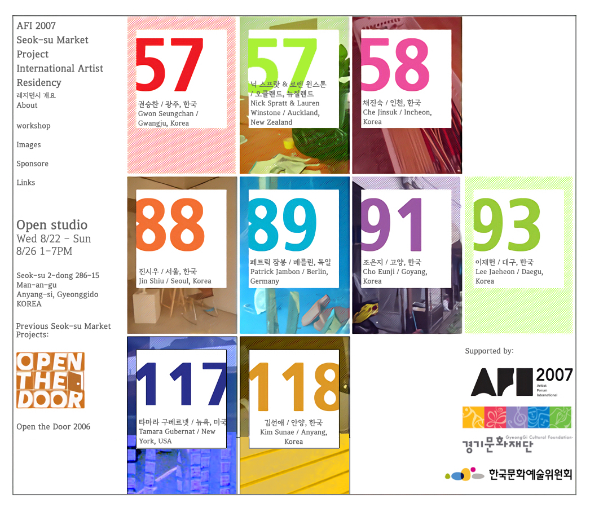


■ 바셀린 프로젝트(권승찬)Vaseline Project
기획,편성 : 권승찬
프로그램매니저 : 안나영, 김가이, 김설아
녹취참여 : 박찬응관장, 초등학교 어린이, 중앙미용실원장, 권승찬, 안나영, 김가이, 김설아
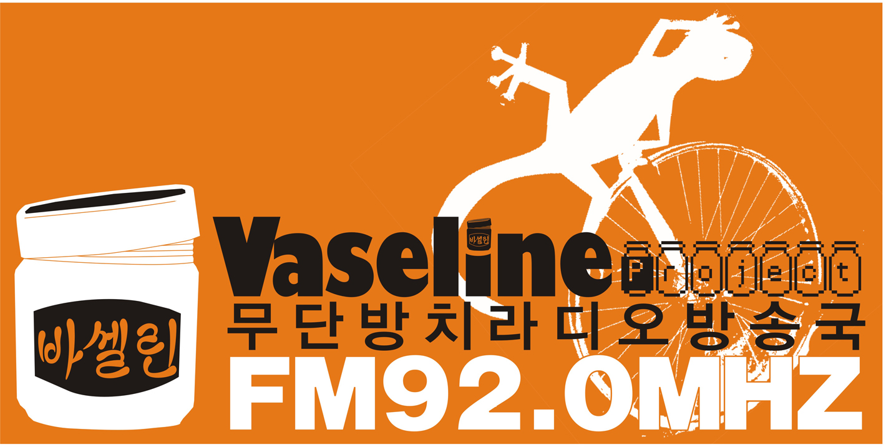 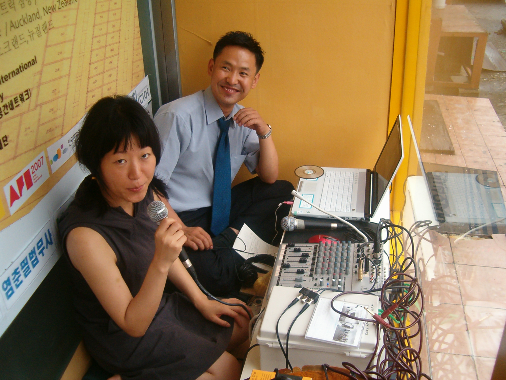
라디오 방송국 Vaseline Project
생활환경은 하루가 다르게 변해 간다. 자본과 내.외 물리적인 것들에 의해 그 지역만의 독특한 풍경과 소소한 것들이 점차 사라지고 더 크고, 화려하고, 높은 건물이 들어선다. 각 지역의 평균화와 균형 분배의 논리가 모든 지형적 구조의 외형은 물론 내적 의식까지도 갈아 치우고 있다. 새것을 만들어 내고, 받아들이기에 치중했던 것이, 똑같은 건물 숲의 양산과 의식구조나 문화적 취향까지도 이 획일화에 발맞추고 있지 않은지 생각해볼 일이다.
The living environment changes day after day. The unique picturesque and trivial are disappearing and replaced by the bigger, the more brilliant and the higher buildings due to the capital and other physical forces inside and out. The equalization of the areas and the theory of equal distribution are changing the inner consciousness as well as the appearance of all geological structures. It is worth considering if our focus on making new things and accepting them forced the creation of the same building forests and the same conscious structure and cultural tastes into this unification.
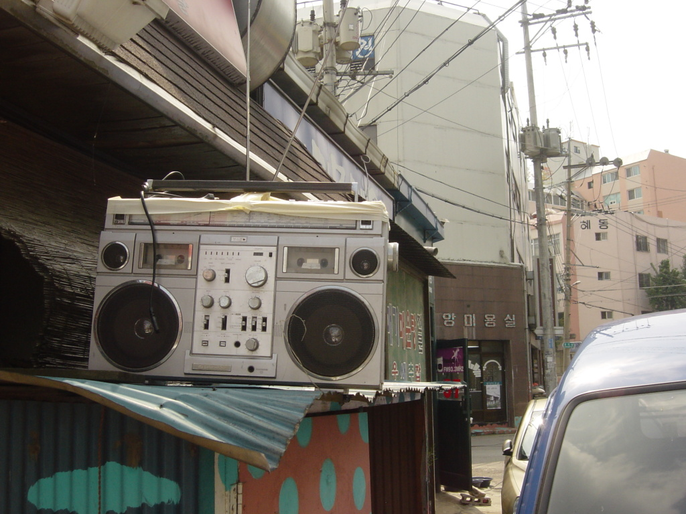
이와 같은 현상은 비단 한 지역만의 문제가 아닌 한국의 사회의 전반에 거쳐있는 과제 일 것이다. 세계화와 자본 논리가 대두될수록 사회의 양극화는 심화되고, 이로 인해 보이지 않은 계층과 세대 간의 갈등은 해결되지 않은 숙제로 남게 된다.
현재 조금씩 지역공동체의 소출력 라디오 방송국이 수면위로 떠오는 것은 이런 세계화와 거대자본들의 몰입이 양상해낸 불소통과 갈등의 구도를 그 지역만의 문화적 의식과 경제 활동이란 측면을 고려한 자생적 대안 모색이 아니가 생각한다.
이러한 갈등의 고리를 사람들의 정신적 가치와 사회적 변화의 흐름을 사람, 공간, 역사, 자연, 사물등에 있다고 보고, 한 사회의 동시대성을 지닌 기억과 추억으로서 라디오 매체를 통해 구체적이고 현실적 존재로서 의미를 보여주고자 한다.
Such phenomenon is not a problem of a certain area but should be a problem that exists nation wide. As the globalization and capitalism arise, the social gap deepens, and the invisible conflict between the social classes and the generations is left unsolved.
The current phenomenon that the local minor output radio stations are rising to the surface is considered to be the spontaneous alternative for the structure of miscommunications and conflict created by the globalization and the major capitals, taking into consideration of the cultural consciousness and the economic activities which are unique to the area.
Under the assumption that the loop of this complication and the trend of social change lie in people's spiritual mind and people, space, history, nature and objects, respectively, I would like to show the contemporaneous of a society as a realistic and concrete presence of memory and remembrance through the means of radio media.

무단방치 라디오 방송국 Vaseline Project (스톤앤워터 레디던시 오픈스튜디오)
Vaseline Project는 2006년 문화관광부의 소외지역 공공미술 사업의 한 일환으로 진행되었던 광주 중흥동 프로젝트의 “중흥동 라디오 방송국 - jbc”로 출발하여 현재 서울과 광주등에서 총 5회를 진행 하였다. 이 라디오 프로젝트의 큰 특징은 무형의 “소리”와 ”전파“를 미술에 적극 차용 한다 것과 공공성이라는 측면을 들 수 있다. 라디오라는 매체를 통해 한 지역의 사람, 공간, 역사, 자연, 사물, 소리, 시간 등을 예술론적 관점으로서 어떤 소통의 장을 찾고자 했던 실험적 모색이었다고 생각한다.
그러나 예술론적 관점에서 라디오 방송 프로젝트의 출발이 누구나 이야기하고, 듣고, 즐긴다는 개념의 설정은 시간, 자본, 형식과 내용 등에서 오는 한계성에 직면해 있는 것도 사실이다. 프로젝트의 짧은 기간, 좁은 수신 전파에서 오는 청취율, 일정부분 기존 공중파 방송의 형식과 내용 차용에서 오는 미약한 컨텐츠 등의 한계성이 그것이다.
무단방치는 금번 오픈스튜디오 라디오 방송의 주요 컨셉이다. 이는 Vaseline Project가 앞으로 어떤 지속성과 컨텐츠를 가지고 나갈 것 인가에 대한 고민과 과제를 생각하는 시험적 모색으로 삼고자 하는데 주안점을 두었다.
Neglected radio station Vaseline Project (Stone and water residency open studio)
Vaseline Project was started from "Joongheungdong radio station - jbc" of Gwangju Joongheungdong project which was developed as a part of the public art projects for the isolated areas by the Ministry of Culture and Tourism in 2006. The vaseline project was conducted for 5 times in Seoul, Gwangju and other areas. The most apparent characteristic of this radio project is that it actively introduces the intangible "sound" and "wave" to art as well as it is a public project. I think it was an experiment to find a certain communication channel for people, space, history, nature, objects, sound and time in a certain area in artistic view through the means of radio media.
However, in the artistic view, it can also be said that the concept of this radio broadcasting project was started from the idea that it should allow every and anyone to talk, listen and enjoy faces its limitation in terms of time, capital, formality and contents. Such limitations include the short period of the project, low audience ratings due to narrow incoming wave, weak contents due to partial adoption of the formality and contents of the existing public broadcasting.
Negligence is the major concept of this open studio radio broadcasting. It focuses on the experimental consideration on how the vaseline project should develop with what kind of continuity and contents.
• 시험방송: 8.6-16 (3-4회) 매일 12:00-14:00(2시간)
- 라디오 방송국의 시각적 홍보 및 참여유도, 체험, 호기심유발 등
장소: 석수시장 사람이 모이는 공간의 이동방송(시장 내, 세미나 롬 앞, 우리마트 앞 등)
형태: 소 출력 라디오 방송국을 설치 운영 운영: 권승찬, 안나영, 김가이, 김설아
프로그램: 무단방치(음악방송,상가 및 영업장 홍보,장기 및 노래 자랑,라디오 쇼핑,취중진담)
• 본방송: 8.22 - 8.26 (오픈스튜디오 기간) 매일 13:00-16:00 (3시간)
장소: 작업실 및 시장 내 사람이 모이는 공간의 이동방송
형태: 소 출력 라디오 방송국을 설치 운영 운영: 권승찬, 안나영, 김가이, 김설아, 시장상인, 주민, 작가, 관람객 등
프로그램: 음악방송(예) 신청곡, 조은지, 김시우-시그널 음악, 타마리&김선애 동영상 싸운드 방송 삽입 등)
고정 진행 방송( 예) 스톤앤워터, 레디던시, 작가, 주민, 시장, 관객 소개 등)
자유진행방송 편성(무단방치 예) 작가, 상인, 관객, 기타) 홈쇼핑(예) 작가 작품과 상인, 관객 등 물물교환 및 판매)
막걸리 대담(토론회 예) 스톤앤워터, 상인, 주민, 작가, 기타)
취중진담(개인사담-사운드 예) 공공기관내의 소리, 사적인 대화, 거리의 소리, 전파를 통한 소리, 자연의 소리등)
Test broadcasting: 8.6-16 (3-4 times) 12:00-14:00(2 hours) daily
-Visual promotion of radio station and inducement of participation, experience and curiosity
Venue: Mobile broadcasting in the places where Seok-Su Market people are found (within market, in front of seminar room, or woori mart, etc.)
Formality: Establishment and operation of minor output radio station
Operation: Gwon Seung-Chan, Ahn Na-Young, kim ka-i, kim Seol-a
Program: Negligence
-Music program - Promotion of stores and sales places - Talents and singing competition - Radio shopping - Drinking talk
Air date: 8.22-8.26 Open studio period 13:00-16:00 (3 hours) daily
Venue: Workplace and other mobile places where market people are found
Formality: Establishment and operation of minor output radio station
Operation: Gwon Seungchan, Ahn Na-Young, kim ka-i, kim Seol-a, market retailers, residents, writers, tourists, etc.
Program:
Music program/Regular program/Irregular program (Negligence)/Home shopping/ Makgeolli talk (Discussion)/Drinking talk (Private talk)/Sound
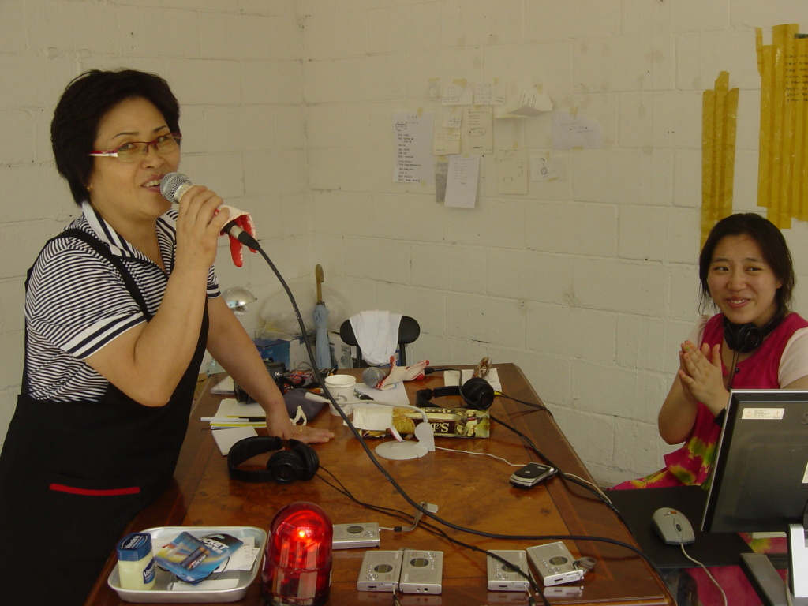
무단방치 라디오 방송국 93.3Mhz. Vaseline Project 방송강령
무단방치 라디오 방송국 93.3Mhz. Vaseline Project 는 안양 스톤앤워터 오픈스튜디오 한 부분으로 진행하는 프로그램으로 2007년 8월 22부터 8월 26일까지 총 5일 동안 매일 3시간씩 FM 주파수 93.3MHz로 석수시장 중심으로 반경 500M이내에서 청취가 가능한 완전 개방형 공개 라디오 방송국 입니다.
무단방치 라디오 방송국 93.3Mhz. Vaseline Project는 라디오라는 친숙하고 접근하기 쉬운 공공매체를 통하여 5일 동안 지역 내에서 벌어지는 미술프로젝트에 관련한 작가와 지역주민들의 다양한 목소리와 사건들을 여러 가지 형태의 편성프로그램들을 통하여 전달 할 것입니다.
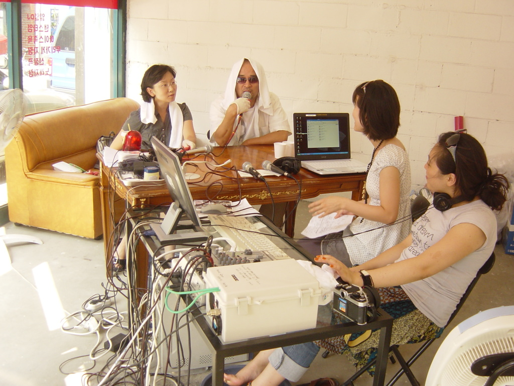
무단방치 라디오 방송국 93.3Mhz. Vaseline Project는 서로 다른 정치적, 사회적 의견 그리고 지역 내의 개발과 보존에 대한 갈등과 고민에 대해 의견제시를 하거나 요구가 있을 경우 본 라디오 방송을 통하여 심층토론을 할 수 있는 기회를 제공하고자 합니다.
무단방치 라디오 방송국 93.3Mhz. Vaseline Project는 완전 개방형 라디오 방송으로 방송 진행 기간 동안 또는 방송진행 시간동안 프로젝트관계자와 주민들의 참여기회를 열어놓고 요구사항이나 방송 출연 의사가 있을 경우 언제든지 참여 가능한 형태를 지향 합니다.
무단방치 라디오 방송국 93.3Mhz. Vaseline Project 는 비영리추구로 진행하는 미술프로젝트이므로 사적영리추구를 위한 후원이나 어떠한 형태의 외부로부터의 부당한 요구나 간섭에 단호히 반대합니다. 단 사적영리추구나 부당한 요구나 간섭이 없는 방송국운영에 도움을 주고 싶은 분들의 여러 가지형태의 지원은 운영진 회의를 통하여 수용합니다.
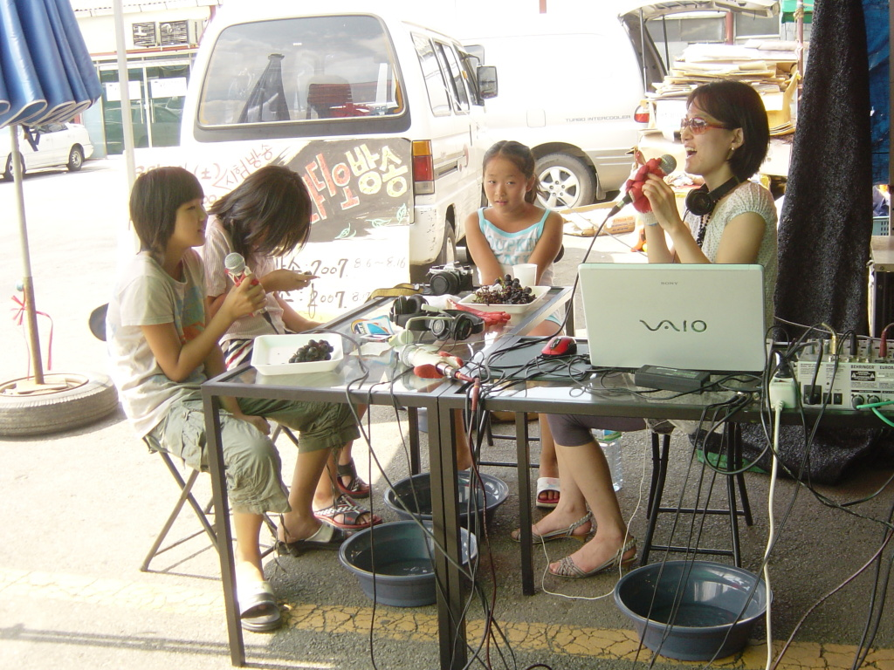
무단방치 라디오 방송국 93.3Mhz. Vaseline Project의 방송진행관련사항들은 예고 없이 언제든지 필요할 경우에 변경, 취소, 전환 가능성을 지향하며, 기존의 공중파방송이 가졌던 계획되어진 엄숙함과 진지성을 거부합니다.
무단방치 라디오 방송국 93.3Mhz. Vaseline Project는 방송운영을 위한 주민들의 적극적인 참여나 의견 제시는 언제든지 환영합니다. 운영이나 방송진행에 참여 하고 싶은 분이나 기타 문의 사항이 있는 분들은 지역번호 031 472 2886로 아침 11시부터 오후 5시까지 연락바랍니다.
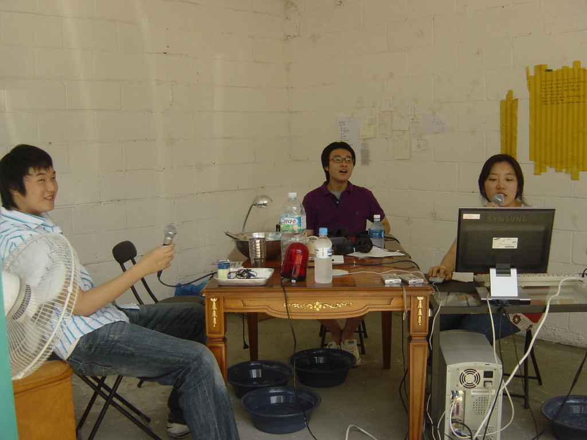
2007년 8월 22일부터 8월26까지 매일 3시간씩 FM 주파수 93.3MHz로 수석시장 내에서 방송하는 무단방치 라디오 방송국 93.3Mhz. Vaseline Project는 주민 여러분을 위한 방송입니다, 많은 참여와 깊은 관심을 가져주시기 바랍니다. 감사합니다.
지금까지 무단방치 라디오 방송국 93.3Mhz. Vaseline Project에서 전해 드립니다.
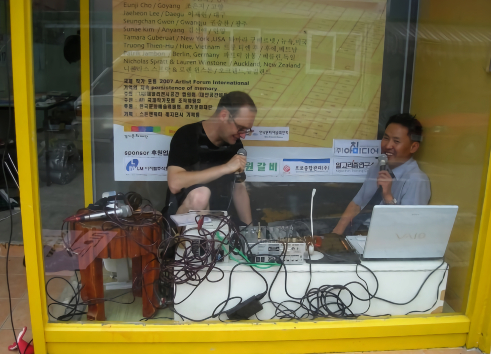
| 22일(수요일) | 23일(목요일) | 24일(금요일) | 25일(토요일) | 26일(일요일) | |
| 오후 1:00 ~ 2:00 | 음악방송(작가 및 주민 신청곡) 댄스타임 - 작가 및 주민참여(타마라 살사댄스) |
||||
| 오후 2:00 ~ 2:30 | 진시우 작업 시그널 음악 방송강령(고정) 방송 축하 메시지 |
진시우 작업 시그널 음악 방송강령(고정) 2%커뮤니케이션 (타마라의 대화) |
진시우 작업 시그널 음악 방송강령(고정) 작가 초대석-김선애 권승찬-거짓말 방송 |
진시우 작업 시그널 음악 방송강령(고정) 2%커뮤니케이션 (닉과 대화) |
진시우 작업 시그널 음악 방송강령(고정) 2%커뮤니케이션 (잠봉과 대화) |
| 오후 2:30 ~ 3:00 | 관장님 및 디렉터 미술관람객들과 대화 |
이은혜(중학교1학년) 진행방송 |
작가운영방송 작업소개 및 녹취분 타마라, 김선애 |
노브레인 작가와 대화 각나라말 |
|
| 오후 3:00 ~ 3:30 | 무단방치 | 권승찬-거짓말 방송 무단방치 |
막걸리 대담 - 미술 관계자, 작가, 주민 |
권승찬-거짓말 방송 무단방치 |
권승찬-거짓말 방송 무단방치 |
| 오후 3:30 ~ 4:00 | 주민 및 상인들과 대화(취중진담) 석수의 소리(3분) |
주민 및 상인들과 대화(취중진담) 석수의 소리(3분) |
주민 및 상인들과 대화(취중진담) 석수의 소리(3분) |
방송 정리 | |
※ 시그널 음악-진시우 작가 작업 (현지 주민들이 그들의 선호곡들을 생음악으로 노래한 작업)
※ 방송강령은 주민, 작가, 학생들로 구성 녹취
※ 방송 축하 메시지-만나는 모든 사람들에게서 녹취(보이스 레코드)
※ 관장님과 디렉터와의 대화
※ 무단방치-그냥 주변인들의 참여로만 이루어질 것임
※ 주민과 상인들과의 대화는 섭외하는 대로, 섭외되지 않으면 그냥 방치방송으로 연결한다.
※ 석수의 소리- 길거리나 미장원에서 들리는 소리를 녹취, 3분정도 방송한다.
※ 2% 대화-타마라와 권승찬 작가와의 대화, 각자 자신의 언어로. 의사불소통을 방송
※ 작가운영방송 작업소개 및 녹취분-작가의 작업소개 혹은 녹취분을 방송한다.
※ 권승찬 거짓말 방송-권선생님의 진행
※ 라디오 홈쇼핑 -김선애 작가 작업을 홍보 및 판매(작가와 함께) 혹은 내용 변경시 아이들 혹은 다른 섭외자들과의 대화 (가게 자랑)
※ 막걸리 대담- 골판지 깔고 막걸리 사놓고 석수시장에 관한 내용들, 문화행사가 죽어가는 장터에서 열리는 것에 대한 이야기
혹은 스톤 앤 워터의 역할, 석수시장 발전에 대한 주민들의 생각, 의견 교환 외국작가들의 석수시장 거주, 작업에 대한 주민들의
반응이나 생각
※ 노브레인 작가와의 대화-되도록 많은 작가들의 참여, 각자 자기나라말로 떠든다.
※ 방송 정리-진행자들끼리의 방송 준비과정, 참여, 섭외 및 하고싶은 이야기들을 자유롭게 하며 방송 종료
• 이 계획안은 사정에 따라 변동 혹은 취소될 수도 있습니다.
■ 닉 스프랏 & 로렌 윈스톤(오클랜드/해밀턴, 뉴질랜드)
Nick Sparatt & Lauren Winstone(Auckland/Hamilton, New Zealand)
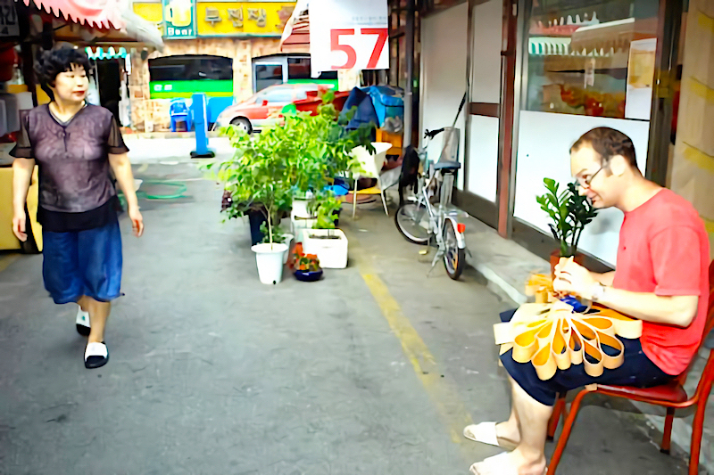
우리는 기능과 실용성, 교환이라는 주제를 프로젝트로 발전시킬 계획을 갖고 석수시장에 도착했다. 우리가 예전에 협업으로 진행했던 프로젝트 중 상당수가 쓸모없는 물건과 구조물을 다시 유용하게 만들고 싶다는 소망을 바탕으로 하고 있었다. 그러나 우리는 이러한 소망을 실천하는 효과적인 체계가 여기에 이미 존재하고 있음을 알게 되었다. 폐품을 손수레에 모아 재활용센터로 가져가는 노인이 그 한 예이다. 특히 우리가 거주하던 지역에서 볼 수 있었던 수공가구들이 우리의 눈길을 끌었다. 새 재료와 헌 재료를 섞어 손으로 만든 수많은 의자, 식탁, 평상, 주차방해물 등이 길가 곳곳에 넘쳐나고 있었다.
We arrived in Seok-su with thoughts of making a project that followed our interests in function, utility and exchange. Many of our previous collaborative projects have been motivated by the desire to make useless objects and structures useful again, but we found that there were already effective systems doing this here already, such as the old people who collect cartloads of waste material to take to the recycle centres. In particular, we were fascinated by the hand-made furniture we found on the streets around this part of Anyang; the many benches, tables, pyong-sang and parking-space savers that populate the footpaths and roads, combining new materials and old to do the jobs at hand.
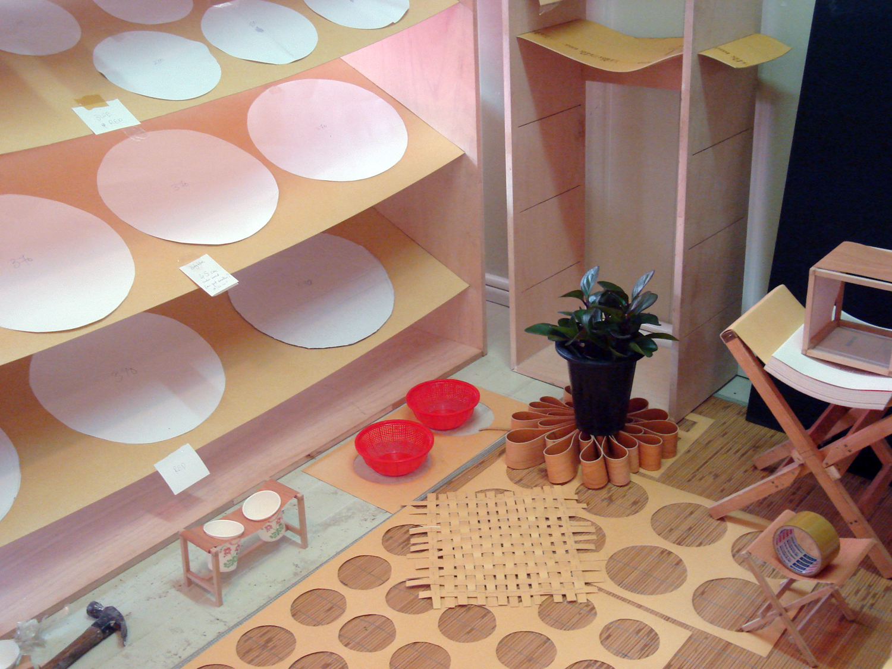
값싼 기성품을 구입하는 대신 손수 만들어진 이 가구들은, 어디선가 다른 작업에서 남겨진 나뭇조각, 옆 가게에서 구해온 리놀륨장판, 중고가구의 일부분 등 즉석에서 손에 닿는 재료로 재구성된다. 각 가구는 목적의식과 경제적 감각을 바탕으로 만들어진다. 즉, 특정한 사용목적이 있는 각 가구를 만드는 데 쓸데없이 낭비되는 재료는 없다. 가구 하나하나를 발견할 때마다 우리는 새로운 것을 배울 수 있었다. 각각의 가구는 그것이 놓인 공간, 만든 이, 사용가능했던 재료에 따라 약간씩 차이를 가지고 있었다. 매일매일 일상에서 혁신이 이루어지는 것이다.
Rather than settling for cheap ready-mades, these pieces of furniture seem to have been made with materials that are readily available – whether it be off-cuts of wood from another job, linoleum from the store around the corner or old pieces of furniture reconstituted to make a new ones. Each of these pieces has been developed with a sense of purpose and economy – the piece has a job to do, and very little is wasted in its making. Each of our chance meetings with these pieces of furniture has led to new discoveries; each piece slightly different depending on the space, the maker, and materials available – everyday innovations at play.
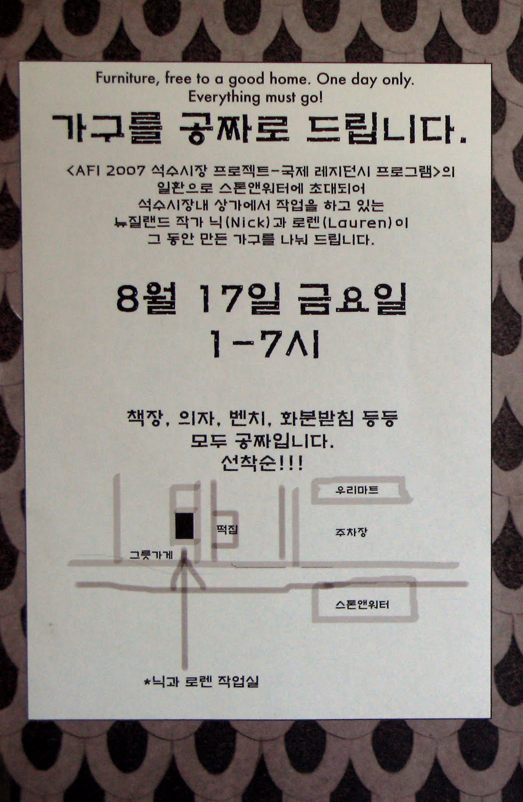
몇 가지 다른 프로젝트에 대한 생각이 떠오르기도 했지만, 결국 이 가구들이야 말로 가장 우리의 관심을 끄는 것이었다. 어쩌다 새로운 평상이나 의자를 발견하게 될 때마다 또다시 새로운 관심이 솟아났기 때문이다. 우리는 레지던시를 시작한 지 몇 주가 지나서야 처음에 사용했던 작업실에 “석수공예가구”라는 간판이 붙어 있었다는 사실을 알게 되었다. 새로운 작업실로 옮겨간 후에도 “가구”라는 소재는 자연스럽게 따라왔고 우리의 작업활동에서 중추적 자리를 차지하게 되었다. 우리는 여기에서 목격한 기술과 재료를 사용해 이런저런 실험을 해보기 시작했다. 리놀륨과 나무를 가지고 재료가 지닌 성질과 모양에 어떤 식으로 단순한 변화를 가할 수 있는지 살펴보았는데, 스스로 서있는 구조물이나 단순하고 기본적인 디자인의 물건을 만들었다. 이제까지 보아온 가구들에 사용된 참신한 기술과, 똑같은 재료를 가지고 우리 스스로도 새로운 창안을 해보고자 하는 욕구가 큰 자극이 되었다.
This furniture was one of the first things that really stood out to us while we were here, and despite ideas for other projects, as we kept chancing upon new pyong-sang and benches our interests would be renewed. It took a few weeks to realise that the sign above our old studio space actually read ‘Seok-su Craft Furniture’, and even when we moved to a new studio space it was natural that the furniture theme followed, and remain at the heart of our activities. We had begun to play with the materials and techniques that we were seeing – taking linoleum and wood, testing to see how we could create simple changes in their nature and appearance; experimenting with self-supporting structures, or simple and essential designs, spurred on by the innovation that we had seen and a desire to try our own inventions with these materials.
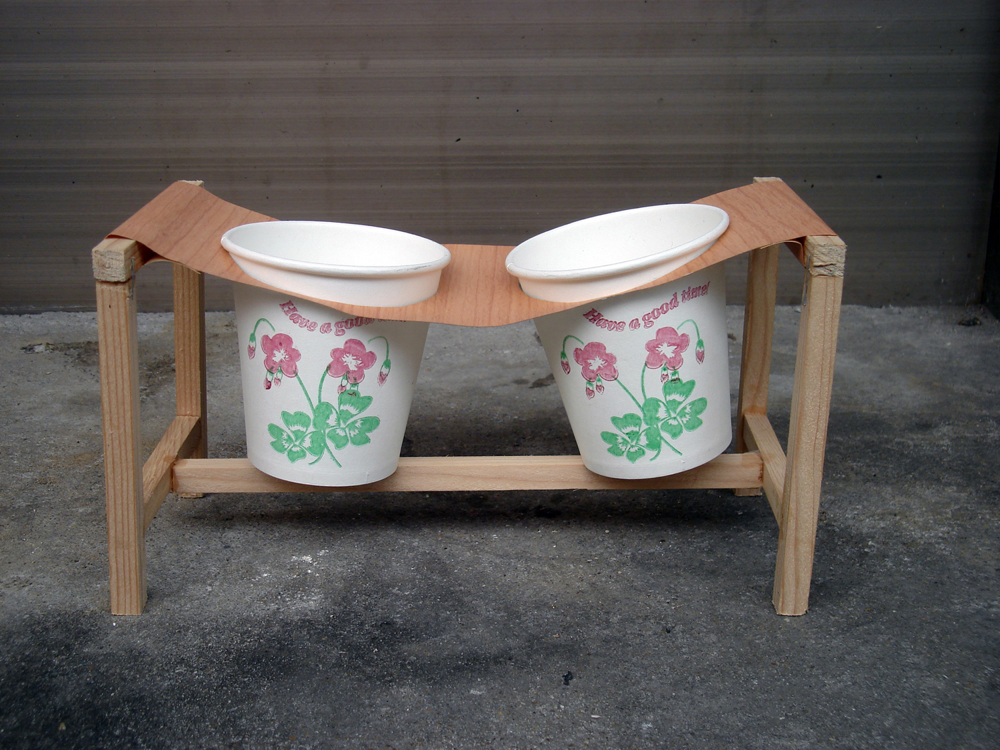
가구와 구조물의 디자인은 시장에 있는 상점과 그들이 판매하는 품목에 따라 크게 영향을 받는다. 상품제작을 위한 선반, 옷을 진열하기 위한 구조물, 화분받침대 등등. 가구를 만들 재료는 모두 석수시장 내 상점과 공급자들에게서 구해진다. 걸어갈 수 있는 거리 이상에서 구해지는 경우는 없다. 우리의 프로젝트는 우리가 발견한 물건을 관찰하고 이에 반응함으로써 이루어졌으나, 그 결과물이 다른 사람에 의해 다시 개조되고 활용되었으면 하는 바람이다. 우리의 작품은 우리가 보고자란 서구의 미술이론과 모더니즘 디자인을 양분으로 삼았으며, 누구든지 다시 따라서 만들 수 있을 만큼 단순하면서도 몇 가지 다른 용도로 사용하는 것이 가능한 구조가 되도록 만들어졌다. 더 중요하게는 실제로 활용하고 변화를 가해 개선할 수 있는 구조물이 되어야 했다. 아직 시작단계에 있는 이 구조물들은 견본이라기보다는 3차원적 밑그림이라 할 수 있다. 시장의 행상인이든 오픈스튜디오를 보러 온 방문객이든, 원하는 사람 누구나 이 열린 가능성을 지닌 물체들을 변형하고 그 기능을 향상시킬 수 있다.
The designs of the objects are largely influenced by the kinds of shops and specialities within the markets – shelving for produce, clothing displays, outdoor pot plant stands, etc. The materials used in the construction of the furniture pieces have all been sourced from local shops and suppliers from in and around Seok-su market – nothing has been sourced further than walking distance. Our project has developed as observations and responses to the things we’ve found, but we hope that the outcomes can be adapted and improved by others. Having grown up on a diet of Western art theory, Modernist designs and ideas have helped shape our works, and in each of the projects and pieces we’ve looked at structures that can accommodate a number of possibilities while being simple enough that anyone could re-make them – more importantly though, they are structures that can be used and improved. Still very much starting points, they are not so much prototypes but three-dimensional sketches, with scope for further development and modification by anyone who chooses to take them on, whether they be a market-vendor or someone who has come to visit the open studios.
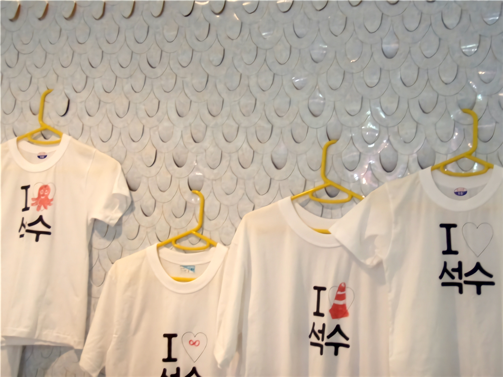 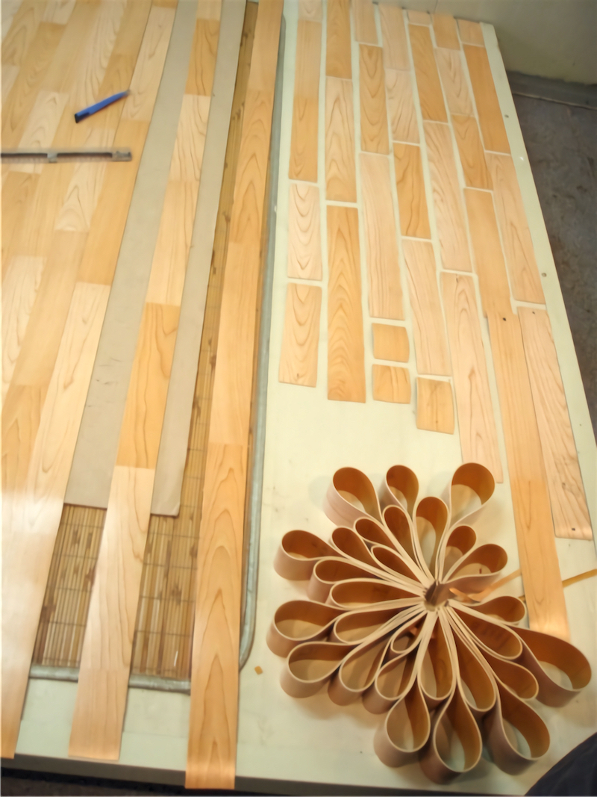
■ 채진숙(인천광역시)
기억의 파편 Fragments of Memory
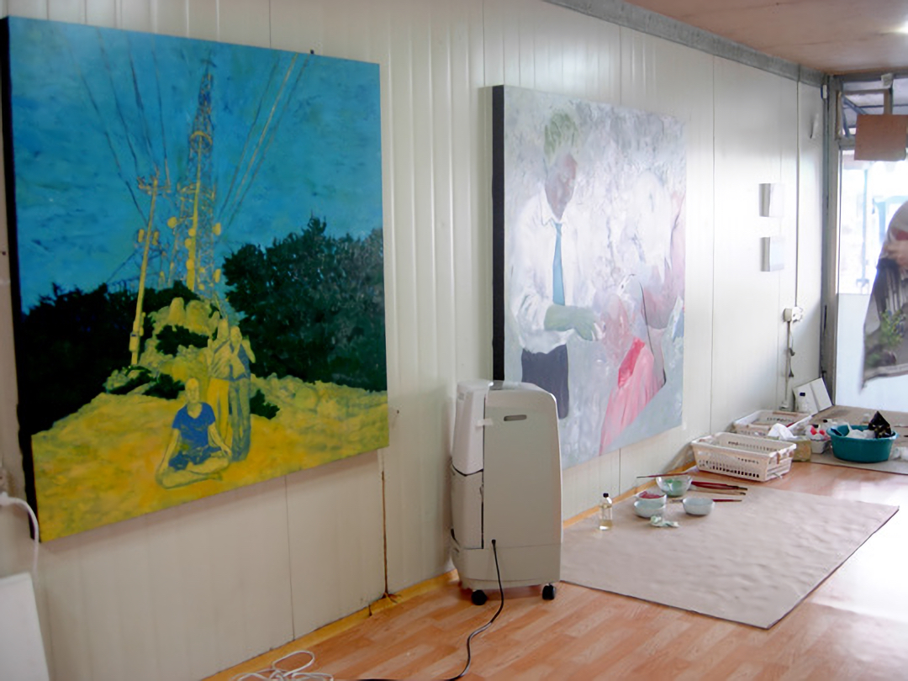
회화적 감각을 살린 작품들과 뉴미디어 및 설치 작업을 바탕으로 작업을 진행하고 있다. 이는 예술 작품의 한계를 뛰어넘기 위한 방법이다. 나의 작업은 삶을 다룬다. 구체적이고 본질로서의 생명을 가진 사람, 식물 등의 살아있음 자체에 대한 것에서부터 작품의 동기가 진행되었다. 어디서부터 와서 어디로 가는가에 대한 고민에서 시작한 이 작업은 나의 조상(근원)에 대한 생각을 하게 되었으며 또한 자손(미래의 인류, 그들의 삶) 등을 고려하게 되었다. 나는 항상 이 뿌리에 대한 생각을 지울 수가 없었는데 그 이유는 그것을 연구함을 통해 ‘나’라는 한 인간의 생성과 소멸을 3자의 관점에서 관찰할 수 있었기 때문이다. 이것은 부모와 자식의 관계처럼 질긴 탯줄로 연결되어있던 모든 조상들과 앞으로의 자손들을 하나의 탯줄로서 길게 있는 이미지를 만들 수 있게 한다. 그리고 이것은 작품의 주된 컨셉인 ‘근원’이라는 단어를 철학적 질문을 통해 연결되어진 뿌리, 인간의 관계에 대한 설명이 된다. 우리가 어디서 오고 어떻게 창조되고 왜 우리가 이것을 하는지 좋아하는지 그리고 우리가 여기서 사는지 등등. 이러한 나의 생각의 흐름은 페인팅, 설치, 비디오, 뉴미디어 등등 예술적 다양한 형식의 작품으로 진행되어졌다. 한국 현대 미술의 한 방법과 젊은 새로운 세대의 예술을 이끄는 예술가로서 다양한 시도와 내러티브와 작품으로서의 소통을 통한 관객과의 대화를 위해 진행하고 있다.
As an artist, I personally engage myself to art related activities geared towards the development of my interest in new media art and I am also active in organizing exhibitions and art-related activities which concerns the promotion of contemporary art produced by young artists. My works deal with topics about life, its origin, essence, and physical material. I have always believed in the idea that all things are connected to one another.
When we were born we are connected to our mother through the umbilical chord, then our connection grew bigger with our relationship to our family, then family to other people then to society then to the world as a whole. At present, I am digging deeper on the concept of origin, questioning roots, relationships, creation and connections which are the fountainhead of oriental philosophy. The idea of where we came from, who created who, why we are like this, where we are going to, and what brought us here. Weaving these ideas in a variety of art forms ranging from painting, video and installation, I seek to merge the narrative and the interactive and communicate them in a more contemporary ways.
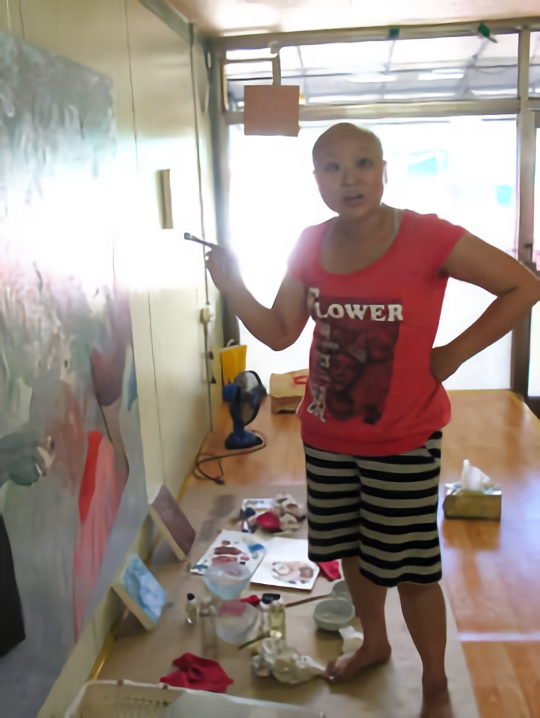 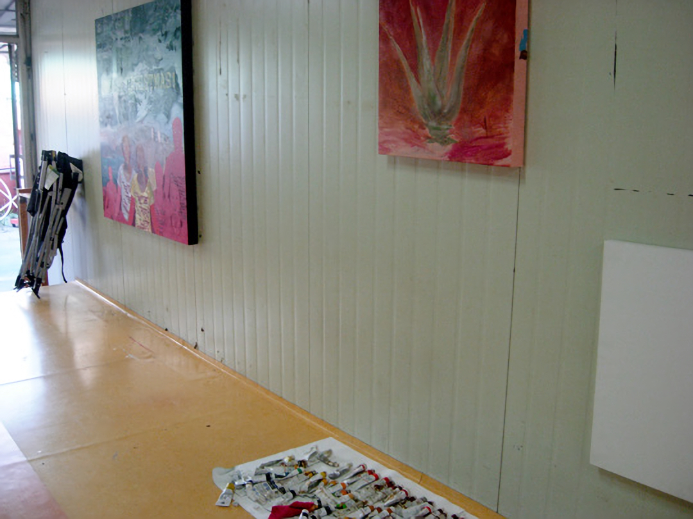
■ 진시우(서울특별시)
석수시장을 위한 노래 Songs for Seoksu Market
타자로서 어떤 대상을 바라보고 리서치와 분석을 거쳐 그것이 나에게 주는 어떠한 통찰력을 얻어내기란 만만치 않은 일일 것이다. 석수시장이란 곳은 나에게 굉장히 어수선한 공간이다. 그것은 현대의 상업적 유통방식에 의하여 번창했던 재래시장이 서서히 쇠퇴해가는 현실과 상관없이 그동안의 세월을 고스란히 담은 공간과 그 공간을 가득 채운 시각 이미지들의 어떤 힘 때문인 듯하다. 그 힘에 의하여 나 역시 석수시장의 이미지들 속에 묻혀가는 듯하다. 그것은 슬프면서도(그 슬픔이 어디에서 오는지 정확히 알 수는 없지만) 즐기기에 충분한 사건이다. 나는 3개월의 레지던시를 마치고 떠나는 것에 그저 기쁘며, 곧 떠날 내가 남은 이들을 위해 '어떤 노래'를 남기려 한다.
It would not be easy to observe an object with someone else's view, go through researches and analyses, and then get an insight that means something to myself.
To me, Seoksu market is chaotic place, probably because of a certain force of the space that keeps the time and the visual images that fill such space despite the space that despite the reality where the once prosperous traditional markers are deteriorated due to the modern commercial distribution system. It seems like that force is sinking me into entertaining event. I feel nothing but happiness as I leave after three months of residency and I would like to leave "a song" for those who will remain.
뮤직앨범 Music Album
석수시장 상점들을 방문하여 상인들을 만나 그들의 삶 속에서 그들이 즐겨부르는 애창곡을 어떠한 반주나 악보없이 자신의 입을 통해 불러줄 것을 부탁한다. 그리고 나는 그것을 녹음한다. 예상컨대 그 노래들은 가사나 음이 정확하지 않을 수도 있으며, 또한 온전하게 끝을 맺지 못할 수도 있다. 그 상태를 고스란히 녹음하는 것이 목표이다. 결과물은 그 자료의 분량에 따라 CD나 DVD로 제작된다.
I will visit the stores in Seoksu Market to meet the retailers and request them to sing their favorite songs they enjoy singing in their daily lives without any music sheet or accompaniment. And I record their singing. Expectedly, their as it is. The result will be produced in CD or DVD depending on the quantity.
도큐멘트 Document
상인들마다 노래 녹음이 끝나면 자신이 부른 노래에 대한 사연을 묻고 그것을 기록한다. 이 기록은 전시를 위한 용도가 아니라 상인들의 노래를 듣고 난 후의 나의 감정과 어떻게 맞닿아 있는지를 알기 위한 리서치이다. 마지막으로 노래를 부른 사람의 모습을 디지털 사진으로 남긴다.
After recording each retailer's singing, I will ask the story behind the songs the sung and record them. Such record is not for exhibitions, but for research to understand how my emotion coincides with their story after listening to them singing. Finally, I will take a digital photo of the person who sang the song.
드로잉 Drawing
이 작업에 대한 컨셉 드로잉 혹은 이미지 드로잉. 나는 이 작업이 예술이 될 수 있을지 가늠할 수 없다. 이 앨범제작 작업은 예술이론으로 무장된 이들이 아닌, 석수시장 '바로 여기(here and now)'에 머무르고 있는 이들을 위한 노래이다. 즉, 그들이 그들 자신을 위해 불렀던 노래 속에 나는 '어떤 작가'의 이미지로 있을 것이며, 그 이미지는 이 석수시장의 무수한 이미지들 속에 다시 묻힐 것이다.
Concept drawing or image drawing on this work, I could not possibly expect that this work can be an art. Producing this album is not for the people who are armed with artistic theories but for those who stay "here and now" in Seoksu Market. In other words, in the songs they sang for themselves, I will remain in the image of "a certain artist" and this image will be sinking into the numerous other images of Seoksu Market.
■ 패트릭 잠봉(프랑스 리옹 태생 / 독일 베를린 활동) Patrick Jambon(France lyon / Germany berlin)
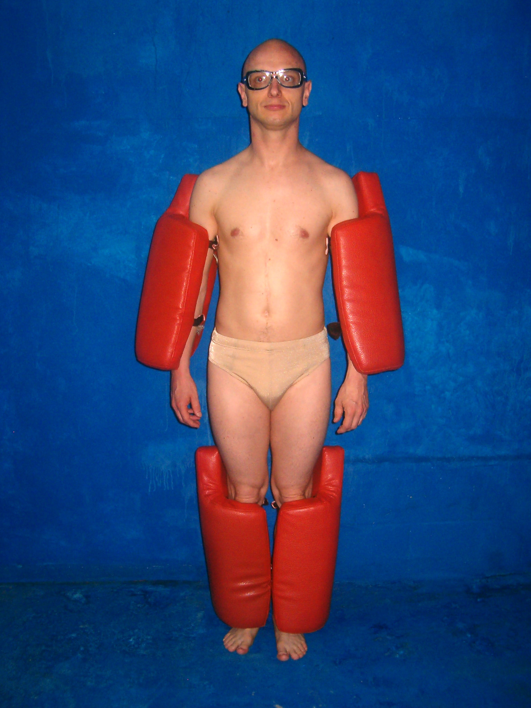 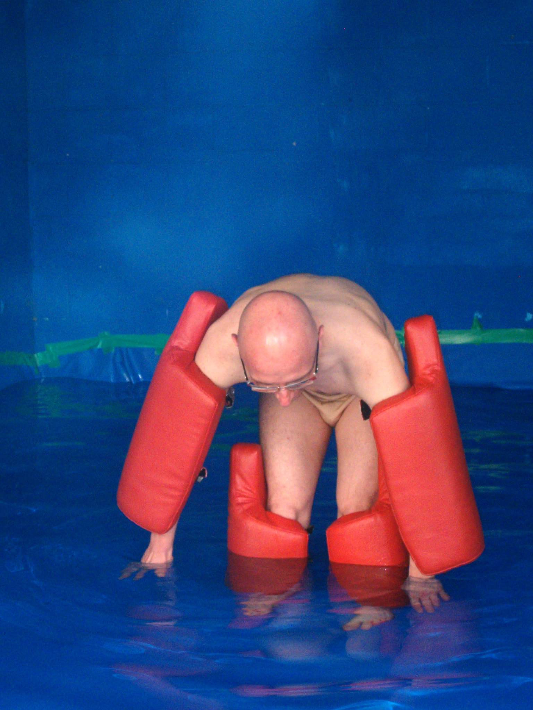 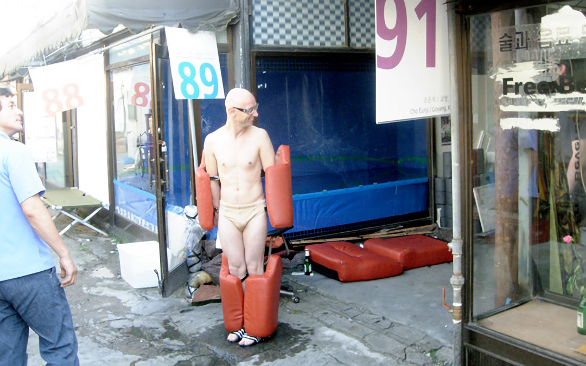
외계해의 안양탐색 게임을 하는 이에게는 외계해(外界蟹 : 외계에서 온 게)UFO의 역할과 석수시장을 돌아다니며 원주민에 관한 정보를 수집하여 귀환해야 하는 임무가 주어진다. 외계해는 행복하게 교외에 살고 있는 안양 원주민에게 다양한 종류의 탐색기를 이식하여 자신과 같은 외계의 스파이로 변환시킬 수 있다. 이렇게 끔찍한 외계해의 음모에 대한 증거수집의 임무를 띈 아처 요원은 여기저기 끊임없이 캐묻고 돌아 다닌다.
The player started as an aliencrab UFO whose job it was to explore Seoksu Market and return with news about the natives. You could implant various alien probes and turn happy suburban Anyanger into aliencrab spies. Aju Agents were constantly snooping about trying to gather evidence of a diabolical aliencrab conspiracy.

게임을 하는 당신이 발각되지 않는 시간이 길어질수록 더욱 매혹적인 정보를 수집할 수 있다. 당신이 온 별 베를리녹스(Berlinox) 대학의 총장은 이 매혹적인 정보들에 무척 기뻐할 것이다. 하편, 아처 요원이 당신의 존재에 대한 증거를 충분히 모으고 나면, 외계에 침입지역 완전박멸을 위해 핵무기를 사용하여 도시 전체를 궤도로부터 이탈시켜 버릴 것이다. 문제는 조그만 크기의 인공지능 캐릭터들이다. 이 캐릭터들은 즐겁게 떠돌아다니다가 옆에 지나가는 사람 누구하고나 가리지 않고 잡담을 나눈다. 그들은 이런저런 일에 대한 정보를 교환한 후, 그 다음 지나가는 사람에게 따끈따끈한 이야깃거리를 전한다. 아처 요원은 외계해의 목격자와 이야기를 나누었던 사람들로부터 증거를 수집한다. 이 작은 인공지능 캐릭터가 말할 때, 진짜로 무슨 생각을 갖고 있는지 당신은 알 수 없다. 그들이 두 세 가지의 화젯거리를 갖고 있겠지만, 게임을 하는 당신은 이를 미리 알 수 없는 것이다. 일은 예상할 수 없이 임의로 이루어진다.
The longer you were undetected, the more delightful information you could gather about the natives. This made your overlords back at the university on Berlinox very happy. On the other hand, if the Aju Agents gathered enough evidence of your existence, they nuked the entire town from orbit in order to cleanse the aliencrab invasion.
But there were some problems the little Al characters wandered merrily about and stopped to chat with anyone who wandered by. They would exchange information about various topics and then go and chat about their freshly collected news with the next person that wandered by. Aju Agents collected evidence by talking to people who had talked someone who had seen an aliencrab.
The little people talked, but you never really knew the internal state of their minds. They might have two or three topics in their heads and as the player, you had no idea, You did something and then something random happened.
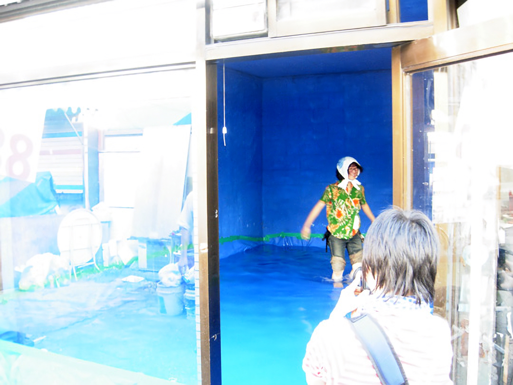
증거계량기 : 아처요원이 당신에게 불리한 증거를 얼마나 많이 모았는지 보여준다. 득점기록 : 당신이 얼마나 많은 정보를 모았는지 보여준다.
규칙 : 사람들은 당구공처럼 지도 위를 천천히 왔다 갔다 하다가 서로 일정한 거리 안에 들어왔을 때에만 이야기를 나눈다. 인공지능과의 대화는 복잡한 규칙이 없는 대신 아래와 같이 확정적이고 단순한 인과논리를 따른다.
- 일반인이 일반인 근처에 다가갈 때 : 아무 일도 생기지 않는다.
- 외계해가 일반인 근처에 다가갈 때 : 득점기록이 올라간다.
- 아처요원이 일반인 근처에 다가갈 때 : 아무 일도 생기지 않는다.
- 아처요원이 외계해 근처에 다가갈 때 : 증거입수 위험측정도가 올라간다.
- 안양의 거주자들(일반인)을 UFO광선으로 클릭하면 외계해 스파이로 변환시킬 수 있다.
이 때 거주자들은 20초 동안 외계해로 변환되었다가 다시 일반인으로 돌아온다.
주의사항 : 너무 많은 수의 거주자를 외계해로 변화시키면 이야기를 나눌 수 있는 사람의 수가 적어지므로 득점이 느리다. 또한 너무 적은 수를 변환시켜도 빨리 득점할 수 없다. 가장 많은 득점을 하기 위해서는 스파이와 일반인의 비율이 항상 적절하게 유지해야 한다.
Evidence Meter : This tracks how much evidence the Agents have collected against you.
Info Score : This tracks how much information you have collected.
Rules : People bounce around the map slowly like billiard balls and only talk when they get within range of one another. There is no complex Al conversations. Instead, you have the following clearly defined cause and effects rules.
- If a normal person gets near a normal person, nothing happens.
- If an aliencrab spy gets near a normal person, your info score goes up.
- If an aju agent gets near a normal person, nothing happens.
- If an aju agent gets near an aliencrab spy, the evidence alert level goes up.
- You can convert a suburbanite anyang into an aliencrab spy by click on them with your UFO beam.
They stay converted for twenty seconds and then change back into a normal person.
Risk : If you turn too many suburbanites into aliencrab spices, you won't have enough suburbanites to talk to and your score will increase only slowly. If you don't convert enough, you also won't increase your score fast enough. The player needs to constantly manage the correct ratio of spies to suburbanites to get the highest score.
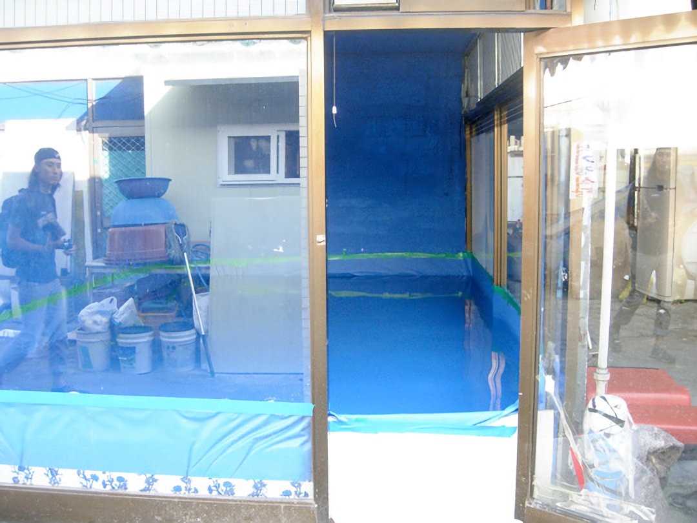
■ 조은지(경기도 고양시)
내 럭키는 어디 있나요?
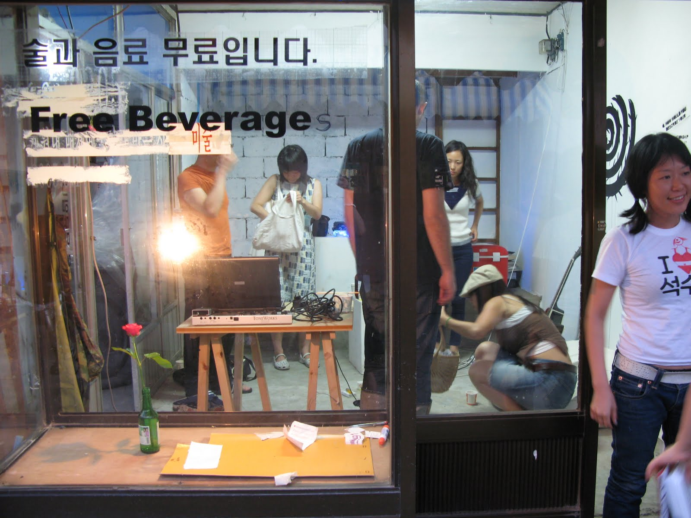 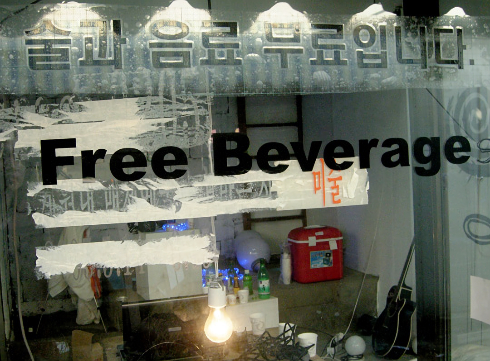
안양에서 작가레지던시를 시작한 2007년 7월 어느 날, 나는 여느 때와 같이 석수시장에서 친구와 가끔 터지는 웃음보를 참아가며 아무것도 하지 않고 앉아 있다. 무엇인가 새로운 것이 벌어질 것이라는 기대는 하지 않는다. 당영한게 사고 팔고 떠드는 것이 전부인 곳이기 때문이다. 시장 구석구석에는 죽은 듯이 보이는 공간이 있다. 석수시장에는 몇 개의 빈 점포들이 있는데 입주해 있던 가게 주인들이 떠나고 그 장소들은 다시 채워지지 않고 비어 있는 것이다. 그 중 한 곳에 내가 앉아 있다. 그리고 또 하나 빈 곳이 있는데 그것은 럭키라는 개가 살던 집이다. 어느날 나는 럭키를 찾아 나서기로 마음 먹는다.
One day in July, 2007 When I started the artist residency in Anyang, I was sitting in Seoksu Market with a friend of mine as usual, trying not to burst out the occasional laughs and not particularly doing anything else. I was not expecting anything new would happen. Because the place was all about selling, buying, making noises and nothing else.
Here and there in the market, I saw deadish spaces. There were a few empty stores in Seoksu Market which were abandoned by the previous owners and never occupied afterwards. I was sitting at one of those places. And there was another empty space where a dog called "Lucky".
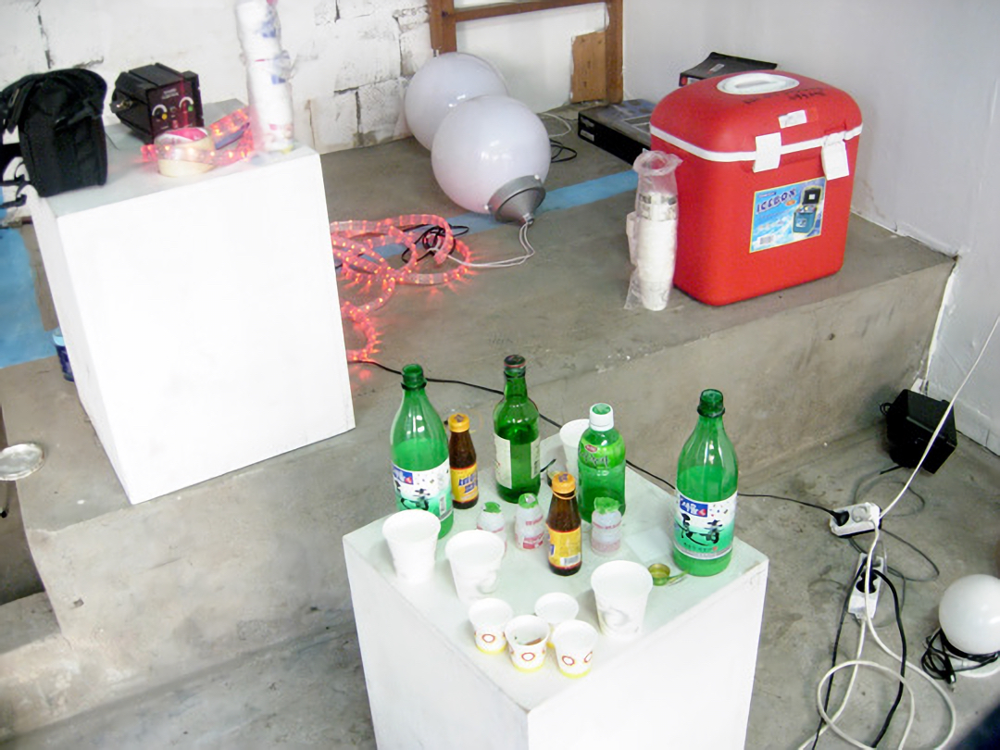 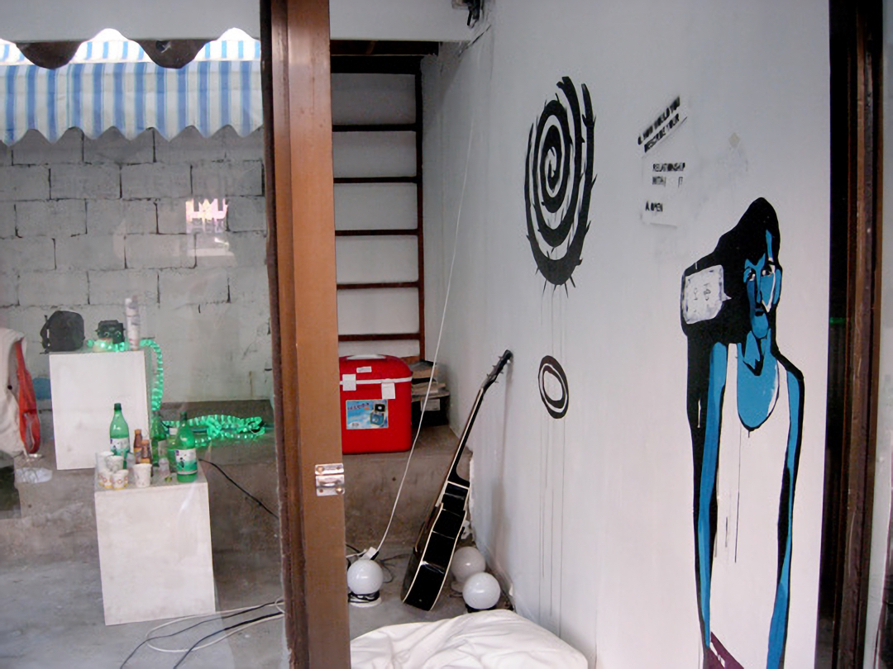
안양에서 작가 레지던시를 시작한 2007년 8월 어느 날, 나는 여느 때와 같이 석수시장에서 친구와 어떻게 하면 즐거워질 수 있을까를 생각하며 앉아 있다. 무엇인가 새로운 것이 벌어질 것이라는 기대는 하지 않는다. 다영하게 사고 팔고 술 마시는 것이 전부인 곳이기 때문이다. 그래서 밤이 될 때까지 어떻게 해야 즐거워질 수 있는가를 고민했다. 나는 시원해지고 싶어서 시장에서 밤을 즐기기로 한다.
One day in August, 2007 when I started the artist residency in Anyang, I was sitting in Seoksu Market with a friend of mine as usual, thinking how we could find pleasure. I was not expectiong anything new. Because the place was all about selling, buying, drinking and nothing else. So I kept wondering what I should do to make myself pleasant until dark. I wanted to be refreshed so i decided to enjoy the night in the market.
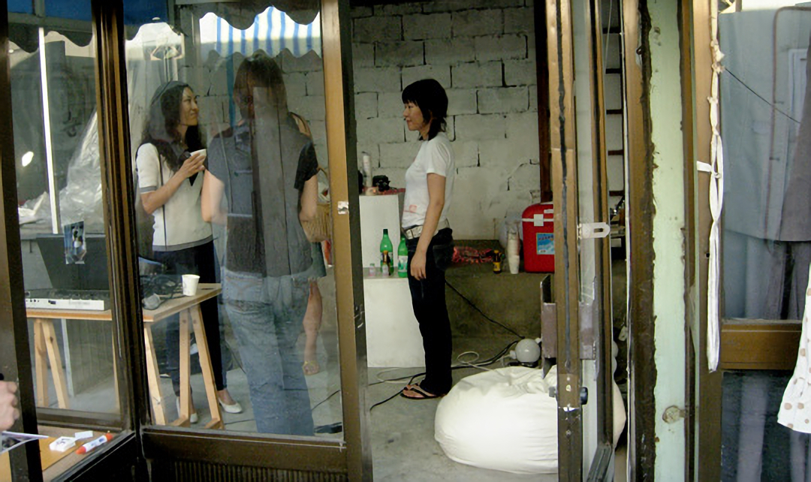
■ 이재헌(대구광역시)
이름없는
No name

눈길이 잘 닿지 않는 곳에 가득한 쓰레기들. 번화한 거리에 흩날리는 잉여물들. 그렇게 외면해 버린 인간의 잔존물들. 잉여 이미지들. 쉴 새 없이 생산되고, 곧 버려지는 것들. 썩어가는 구토물의 악취인 마냥 인간의 냄새를 고스란히 담고 있는 그것. 사라져가는 소중한 흔적들.
The garbage wasters that fill up the space that is hardly recognized ; the surpluses that scatter around a thriving town ; the survivals of human being that were abandoned ; the surplus images ; the things that are incessantly produced and instantly thrown away ; the things that keep the smell of human being intact as if rotting vomit ; and the precious traces that vanish.

석수시장. 그리고 갈라진 아스팔트 틈을 기어이 비집고 일어선 이름없는 풀들. 사라져가는 것들. 이름없는 석수시장의 풀들. 아무도 눈길 한번 주지 않는 그곳에 여전히 서 있는 존재들.
Seoksu market ; the unknown grasses that thrust up from the cracks in the asphalt pavement ; the grasses of Seoksu Market that have no name ; and the existences that still stand in that place where no one even bothers to take a glimpse at.
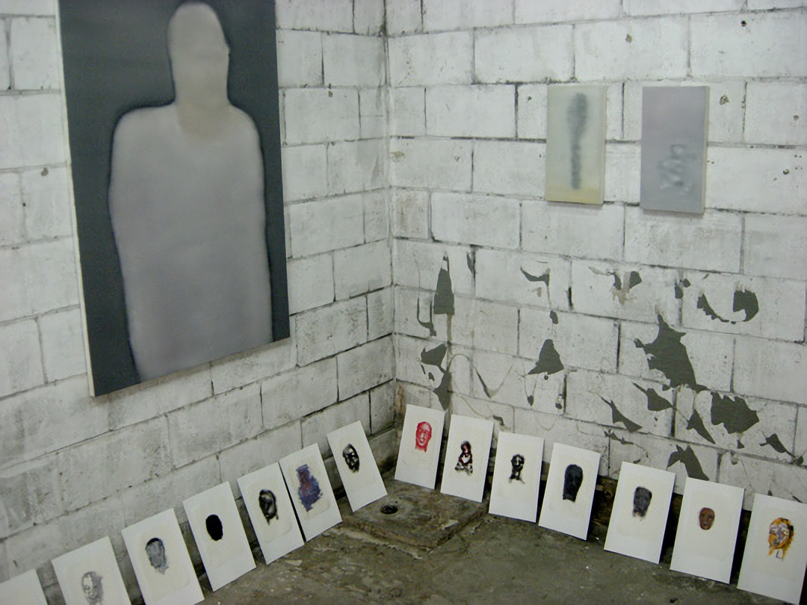
내가 할 수 있는 것이라곤 오직 그림으로 그것들을 추억하는 길 뿐이다. 잠시나마 거기에 인간이 있었다는 것을 . 사라져 가지만 당당히 서 있을 수 있다는 것을 기억하는 길 뿐이다.
The only thing I can do is to memorize those things in paintings. It is to remember that there once was a human being in that place even for a while and although it is vanishing, it can still stand strong.
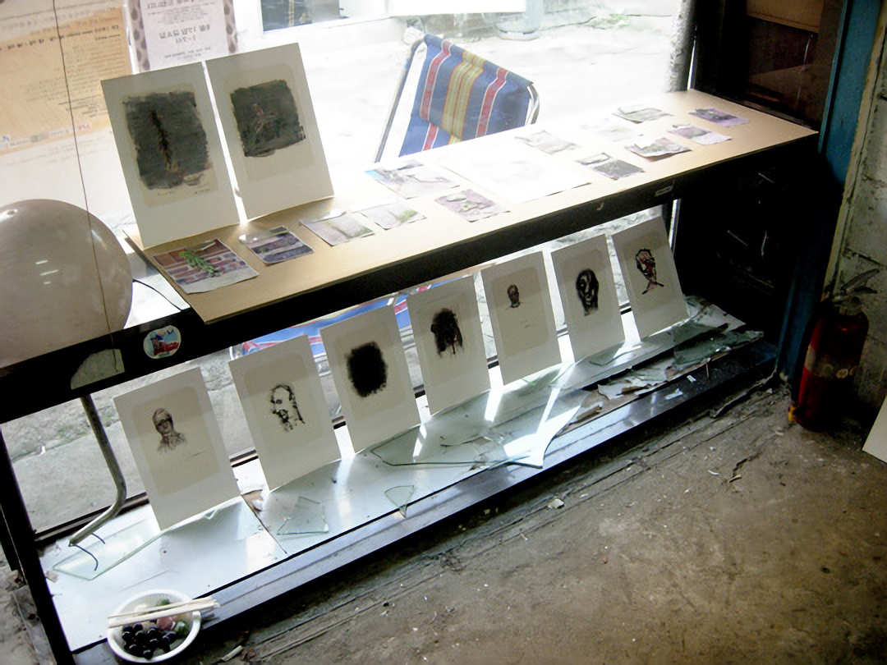
■ 타마라 구베르낫(미국 뉴욕)
Tamara Gubernat(USA NY) - Documenting Change and Communication


벽화의 기록, 그리고 소통 Documenting Change and Communication
미술과 도시계획, 건축, 역사, 사회학의 접점에서 시작되는 나의 작업은 담사와 기록, 주변 환경에서 간과되기 쉬운 지점에 주의를 기울이는 과정을 통해 이루어진다. 전통적인 미술전시장과 공공장소를 오가는 나의 작업에서 장소의 맥락은 결정적인 역할을 한다. 나는 작업을 통해 관객과 참여자를 끌어들이고 미술에 좀 더 큰 일상적 의미를 부여하고자 한다.
Overlapping urban planning, architecture, history and sociology with visual art, my work involves exploration and documentation, bringing attention to otherwise overlooked aspects of our surroundings. Context is crucial to my work, as it moves between traditional gallery/museum settings and other public spaces. Through my work, I attempt to engage the viewer/participant and to enable art to have greater relevance in daily life.
벽화를 기록하기 Documenting Change
나의 변화 중에 있는 석수장의 과도기적 동태를 관찰하고 사진으로 기록한다. 사진은 물리적 공간 안에서의 작은 변화를 담는데 시간이 축적되면서 이 작은 변화는 특정장소의 분위기 전체를 변화시킨다. 새로 세워진 간판이나 개조한 가게 입구 자체는 크게 눈에 띄지 않으나, 수 년에 걸친 작은 변화들이 수업이 쌇여 전혀 다른 공간이 새롭게 만들어진다.
I am exploring and observing the shifting dynamic of Seoksu Market, a place in transition, through photographic documentation of small changes i the physical environment that accumulate over time to change the overall feel of the place. A new sign or renovated storefront may go unnoticed, but hundreds of minor changes over the course of years shape a new and different place.
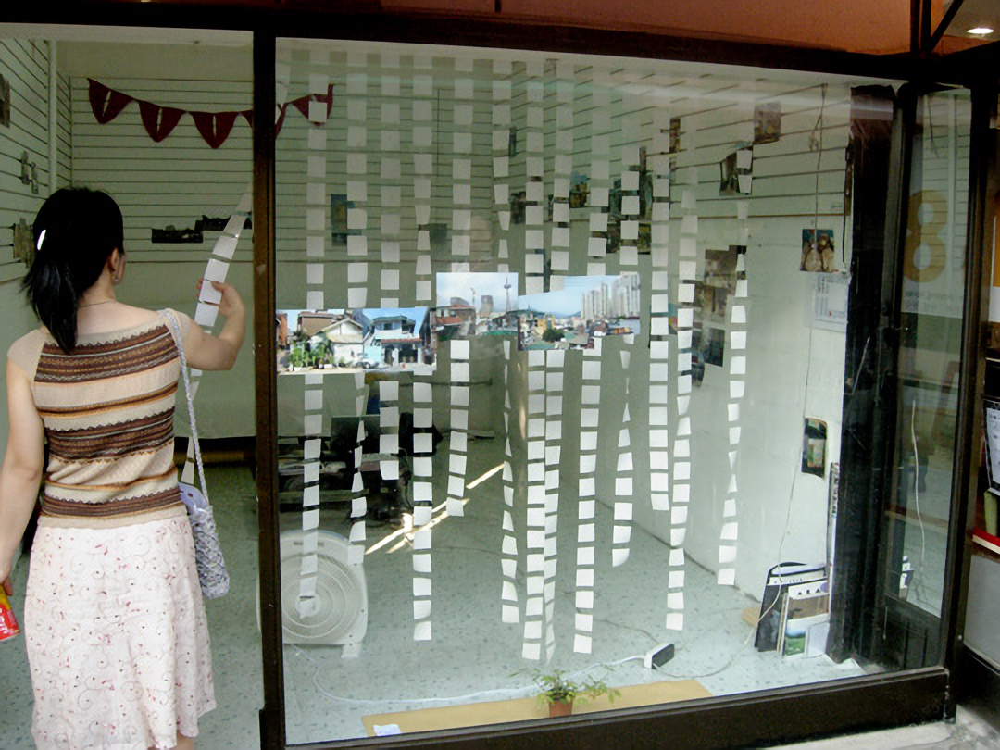
의사소통 Communication
한국에 있는 동안 내게 가장 신경이 쓰였던 것은 바로 의사소통이다. 한국말을 하지 못하는 나에게 사람들과의 교류는 일종의 도전이 된다. 물건을 사거나 식사를 주문하는 것, 또는 미술에 대한 토론이 종종 어려운 과제가 되어버린다. 나는 끊임없이 미소를 짓고 있으며, 시장에서 만나는 사람에게 하루에도 20번씩 "안녕하세요"라고 말한다. 이 말밖에 한국말로는 할 수 없기 때문이다. 때로는 손짓과 몸짓, 컴퓨터 프로그램으로 만든 상당히 부정확한 번역문, 그리고 독심술(ESP)에 의존하기도 한다.
"의사소통이란 게 어쩌면 유토피아가 아닐까?" - 패트릭 잠봉
A major focus for me while in Korea is communication. Not speaking Korean, interacting with people is a challenge, anything from purchasing something to ordering a meal or discussing art often proves to be a difficult task. I smile a lot and say "An-nyoung-ha-se-yo" twenty times a day to the same people in the market, since I don't have any other words to say in Korean. Other times I rely on hand gestures rether inaccurate computer translation programs, and mind reading.
"Maybe communication is utopia?" - Patrick Jambong
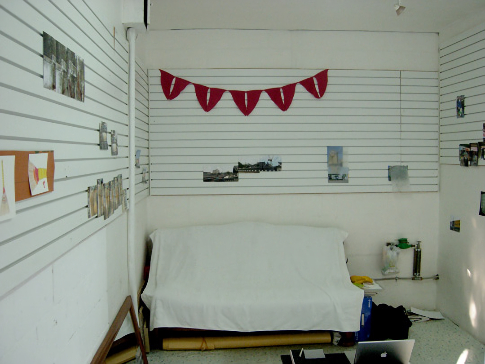
공간을 이루는 사람들 People Make a Place
나는 안양 출신 작가인 김선애와 협업으로 석수시장의 비디오 초상을 만들고 있다. 비디오는 석수시장 국제 레지던시 기간동안 우리가 매일 마주치는 사람들 중 인상 깊은 인물을 인터뷰하여 시장의 인간적 측면을 생생히 담아낸다.
In collaboration with Sun-ae Kim(a native of Anyang), we are creating a video portrait of Seoksu Market, exploring the human dynamic of the market through interviews with the significant characters of our daily lives while in the Seoksu Market Project.
■ 김선애(경기도 안양시)
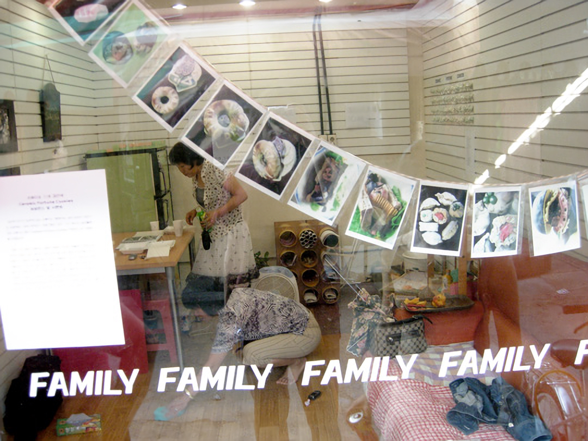
문화 단일화 현상, 그리고 새로운 문화 식민지
나의 작업의 기본 컨셉은 개인적인 문제에서 출발한 사회적 이슈를 미래의 시점에서 바라보는 형식으로 사람들에게 경고 하는 메시지의 형태를 담고 있다. 현실 세계를 바탕으로한 경고 메세지를 담고 있는 가상 세계를 만든 것이다. 대학 시절의 작업은 나의 꿈, 무의식에서 발생하는 개인적인 문제들- 물고기에 대한 두려움과 살이 찌는 것에 대한 두려움-에 대해 비판하고 사회적으로 이슈화 되는 것들에 대해 웃음이라는 요소를 첨가하였다. 요즈음 나는, 문화의 단일화에 관해서 이야기 하고자 한다. 여행을 다니면서 느낀 것을 바탕으로, 거대 회사들이 세계 곳곳에 퍼지고, 맥도날드가 아프리카에까지 진출하였으며, 미국 드라마가 사람들의 마음을 점령하여 문화의 단일화가 서서히 진행되가는 것을 비판하고 사람들에게 알리고자 한다. 도예는 나에게 내가 풀어나가고 싶은 문제점이나 걱정거리 등을 풀어나가는 하나의 치료 과정이고, 흙이라는 소재는 나의 내면의 억압된 스트레스를 해소 시켜준다. 나의 작업은, 내가 좋아하고 평소에 관심 있던 주제에서부터 나오는 호기심의 형태가 아니라 나의 꿈에서부터 나오는 무의식을 흙이라는 매개체를 통하여 풀어나가는 방법이기 때문에, 개인적인 물음에서부터 사회적인 이슈로 진행되어 간다고 볼 수 있다.
Cultural Unification Phenomenon and New Cultural Colonialism
The conceptual premise of my works is based on what would be happening in the future, if we do not consider about what has to be changed for the future such as social problems and current situation to solve.
Each piece of my art works represents a key to resolve the problems we have today. Namely, my works could be a warning message that happen everyday around us. It deals with the problems that we are aware of but have not thought seriously about. As people see and appreciate the works and can feel and realize them. I believe the one of the roles as an artist is to give the public a heads-up about social and cultural problems. But I do not want to explore it in a serious way; instead, I am trying to find a funny and emotional way to express my concerns. Furthermore, when I chose the subject of the artworks, I consider beginning with self-examination and to be connected with social issues, which actually evolve from introspective questioning. During my undergraduate study, the concepts of my works are ‘fear’ and ‘fat’. Now, my aim is to connect with created art works and the public that brings cultural phenomena. This is possible after understanding local or traditional culture and using that cultural difference in a warning message of cultural phenomena.
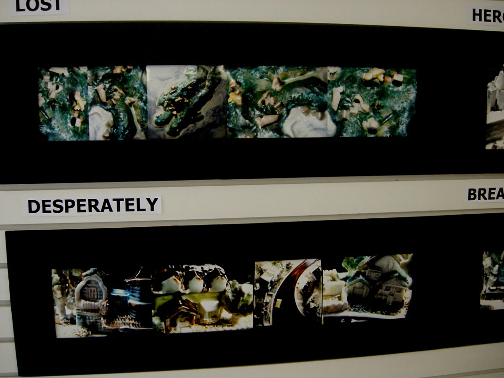
오늘날의 ‘예술’이 ‘사람’을 포함시키고 있다. 사람들은 전시장으로 아이들과 함께 모이고, 컬렉터들은 경매 시장에서 번호판을 들며 숫자와 함께 미술품을 평가하고, 예술을 배우는 학생들은 작업실에서 현실을 비탄하며 예술을 논한다. 즉, 오늘의 예술은 작가와 캔버스의 관계가 아니라 예술의 완성품과 제도, 사회의 관계이다. 나의 작업에서 대중과의 소통과 인터렉티브에 관한 문제를 기본적인 요소 중의 하나로 염두해 두고 작업을 해 왔다. 하지만 사회적 관심을 대중에게 호소 하기 보다 그들에게 웃음을 주고 이야기에 대해 공감대를 형성하기를 원한다. 이번 석수 시장 프로젝트에서 국제 레지던시에 참여하게 된 동기도 바로 여기에 있다. 안양시민의 한사람으로서, 또한 석수 시장과 그 주변의 시장 상인들과 사람들을 나의 작업에 포함시키고자 한다. 공공 미술은 결코 그 주변을 삶을 터전으로 삼고 있는 대중들의 의견 없이 이루어지지 않기 때문이다. 그러한 의미에서 이번 프로젝트가 갖는 의미가 남다르다. 나는 이러한 인터렉티브 아트를 함에 있어서, 도예로부터 출발한 관심이 확장되어 발전되길 바란다. 유연성과 감수성을 바탕으로 다양성을 보여주는 작가가 되고 싶기 때문이다. 도예에 대한 나의 관심과 탐구와 그 외의 모든 가능성을 연결시켜, 그 가능성을 넘어서 새로움을 추구하는 작업을 하고자 한다.
Today, artists focused on interrelationship and interactivity between people and art. Parents gather to the gallery with their children to appreciate interactive art, collectors buy art pieces at auction, and art students criticize and discuss what art is about in the studio. Consequently, art today does not represent a relationship between the artist and canvas anymore. Art is now a complicated relationship among art itself, the social system, and people. This is why I have been working my art pieces under the basic consideration of ‘communication with the public’. That public would be include merchants and citizens from Seok Su market for this project. I would like to have them as a part of my works and look forward to making a progress for the works, too.
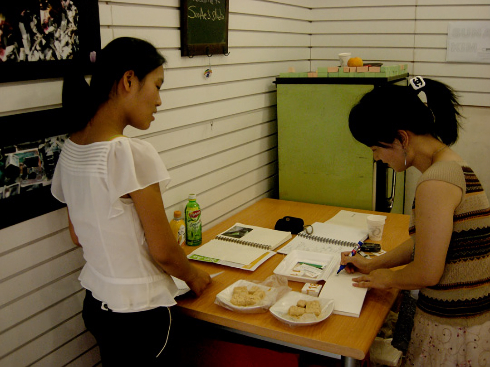
스톤앤워터 전시장 모습
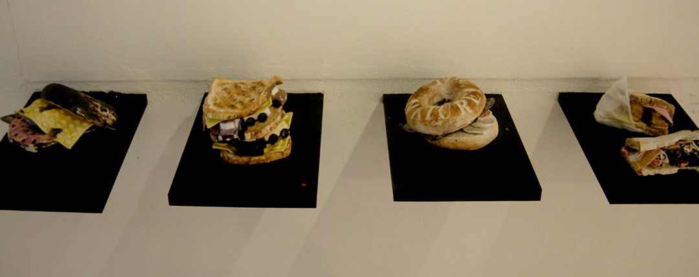 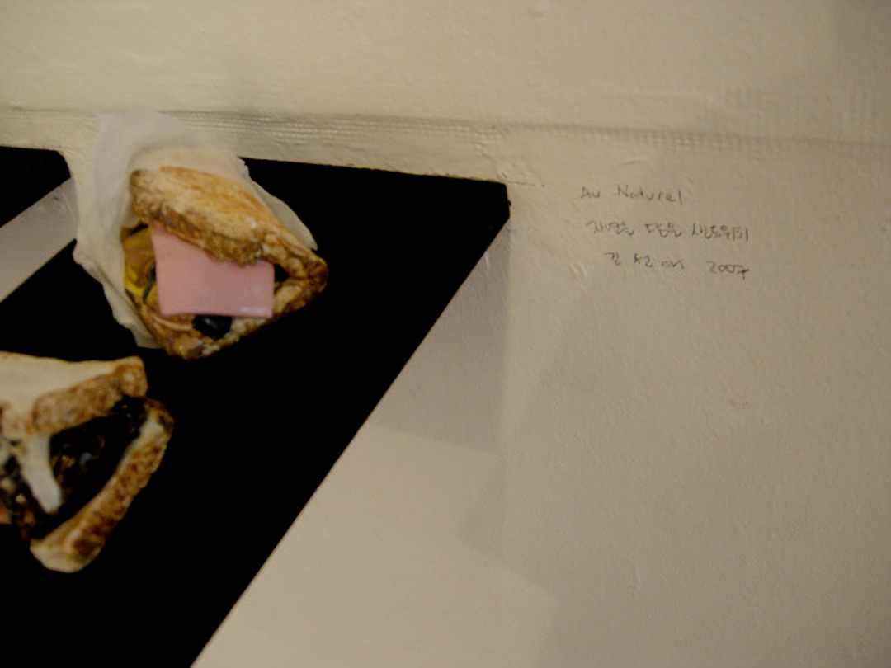


(안양=연합뉴스) 심언철 기자
2007년 7월 25일